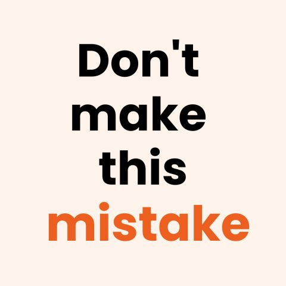

Stop chasing every new framework.
Ashmita Pandey · · Engineering Practices
Stop chasing every new framework. It’s a trap many beginners fall into — thinking the more tools you know, the better developer you become. But what actually makes the difference? ✅ Understanding how data flows through an app ✅ Knowing where the business logic belongs (not in the frontend!) ✅ Realizing how small mistakes can create big problems ✅ Building a solid foundation with core concepts Frameworks will come and go. But fundamentals? They stay with you forever. Focus on the “why,” not just the “how.” That’s where real growth begins. #WebDevelopment #SoftwareEngineering #LearnToCode #CodingJourney #TechAdvice
